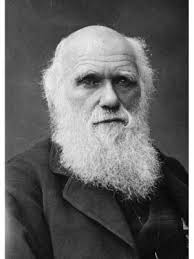

Charles Darwin
La teoria dell'evoluzione

Biografia
Nessuno più di lui fece luce sull'origine dell'uomo, dando con la teoria evoluzionista un nuovo corso alla scienza e ai rapporti tra quest'ultima e la religione.
Nato a Shrewsbury, in Inghilterra, e morto a Londra, nel 1882, seguì le orme del padre e del nonno, iniziando a studiare medicina. Abbandonati gli studi, fu indirizzato dalla famiglia alla carriera ecclesiastica a Cambridge, dove grazie alle lezioni di William Whewell (primo ad aver coniato il termine "scienziato") si appassionò alla storia naturale.
Seguendo il suo amore per la natura e le scienze naturali, si imbarcò sul brigantino "Beagle" per una crociera di cinque anni in esplorazione delle coste sudamericane. Durante l'esplorazione, raccolse moltissimo materiale su cui formulò la "teoria evoluzionista", esposta nel celebre trattato L'origine delle specie (The origin of species, 1859).
La tesi rivoluzionaria, secondo cui "gruppi" di organismi appartenenti ad una stessa specie si evolvono gradualmente, nel tempo, attraverso la selezione naturale, gli procurò l'avversione della Chiesa Anglicana, che solo nel 2008 arrivò a scusarsi, riconoscendo anch'essa che le teorie darwiniane avevano contribuito a migliorare il rapporto tra l’uomo e la natura circostante.
L'Evoluzione
La fama dell'esploratore britannico è dovuta alla teoria dell'evoluzione delle specie animali e vegetali per selezione naturale, essa si sviluppa su 5 punti principali riassumibili in questo modo:
- gli organismi generano una prole troppo numerosa rispetto alle risorse disponibili per garantirne la sopravvivenza, per questo motivo è sempre in atto una lotta all’esistenza;
- non tutti gli individui riescono ad arrivare ad una maturità sessuale;
- in ogni popolazione, dopo un periodo di tempo sufficientemente lungo, esiste una variabilità tra i caratteri portati da individui diversi;
- tra i singoli individui ci sono differenze non indotte dall’ambiente, e alcune di esse sono ereditabili;
- gli individui che riescono a sopravvivere e a riprodursi sono quelli più adatti alle interazioni tra variazioni e ambiente, cioè quelli che hanno ereditato caratteri favorevoli come vantaggio nella lotta all’esistenza. Poiché alcune variazioni consentono agli individui di generare più discendenza di altri, i caratteri favorevoli diventeranno sempre più frequenti di generazione in generazione. Questo è il processo che Darwin definì “selezione naturale”.
Home